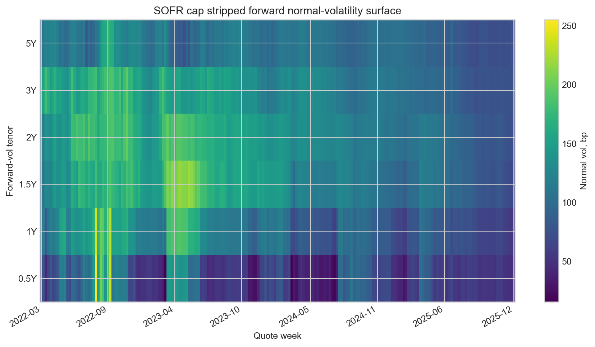

Forecasting Systems
Point-in-time macro pipelines, walk-forward validation, and model fusion
UChicago financial mathematics, mathematics, & economics
I am a graduate student pursuing an M.S. in Financial Mathematics at the University of Chicago, where I also completed my undergraduate studies in mathematics and economics with honors in both.
I am interested in Quantitative Research and Trading, with an emphasis on Commodities, Macro, and Options. In my free time, I enjoy board games, chess, cooking, Lego, poker and rugby.
Point-in-time macro pipelines, walk-forward validation, and model fusion
Quote fragmentation, stablecoin stress, liquidity frictions, and price discovery
Yield curve models, relative value tools, and PM dashboards
Confidential company forecasting project
A private U.S. Nonfarm Payrolls forecasting engagement. Public materials are limited to approved aggregate results and high-level evaluation context; proprietary data, model design, and implementation details are withheld.
The project was built for a company under confidentiality constraints. The public summary focuses on what can be disclosed: out-of-sample forecast performance, benchmark comparison, and release-cycle reliability.
point-in-time OOS months, excluding COVID/reopening distortion
50-month MAE vs 70.8k median consensus
Lower RMSE than median consensus over 50 months
Beat median consensus in 74% of the latest 50 forecasts and 75% on the latest 24
The public version intentionally omits proprietary data sources, feature construction, model architecture, and implementation details.
The disclosed summary reports only aggregate out-of-sample performance relative to a consensus benchmark over approved evaluation windows.
Research + Projects
Macro event study + LP-IV
Measures whether AI-linked earnings and infrastructure announcements carry macro-relevant information for rates and credit markets. The project emphasizes timestamp discipline, event-window construction, instrument diagnostics, and robustness checks that separate narrative signal from confounding market news.
Treasury supply news + yield curves
Builds high-frequency Treasury supply shocks around refunding and auction news, then traces how those shocks transmit across yields, term premia, volatility regimes, dealer balance-sheet states, and placebo non-event windows. The repo documents the public version while keeping licensed raw data out of Git.
SOFR caps + rates-vol premia
SOFR cap forward-volatility stripping, rates-vol risk premia, and leakage-aware carry research; public repo is a research artifact, not a live caplet trading system.


Experience
Zurich-based market risk and quantitative internship beginning June 2026.
Confidential U.S. Nonfarm Payrolls forecasting engagement with public detail limited to aggregate benchmark-relative results.
Fixed income research tools, yield-curve diagnostics, Bloomberg workflows, and BQuant/VBA applications.
Economics and mathematics TA work, fixed income education, and student investment organization leadership.
Links